Dimension command bar
Sets options for dimensions when placing new dimensions and modifying existing dimensions. Some options are available only when you have selected an element first. Other options may not be available with some dimension commands.
-
For 3D dimension value editing controls in the modeling environments, see the Help topic, Dimension value edit controls.
-
For information about driving (locked) and driven (unlocked) 3D dimensions in modeling environments, see PMI dimensions and annotations.
- Back
-
When placing coordinate dimensions automatically, returns to the geometry selection step. The Automatic Coordinate Dimension command bar is displayed. You can change the geometry selection method, select additional 2D geometry elements, and add or remove keypoints from the selected geometry.
- Format group options
-
- Dimension Style Mapping
-
Specifies that the setting on the Dimension Style page of the Options dialog box determines the dimension style. When you set this option, Dimension Style is unavailable.
- Dimension Style
-
Lists and applies the available dimension styles. This option is unavailable when Dimension Style Mapping is enabled.
- Text Scale
-
Applies a scale value to the current text height. The default is 1.0.
 /
/ Driving/Driven Dimension
Driving/Driven Dimension-
Changes the state of the selected dimension between driving (lock icon) and driven (unlocked icon).
-
When you set a dimension to driving, its value controls the size, orientation, or location of connected sketch elements. Its dimension value is prevented from being changed when a connected face is moved or sized.
-
When you set a dimension to driven, its value is controlled by the element it refers to, or by a formula or variable you define. When a dimension is driven, and faces connected to the dimensioned edge are modified, the dimension value is allowed to change.
If you want to set this option before you place a dimension, you must first select the Maintain Relationships command.
-
- Round-Off
-
Sets the round-off for the value. This option is sensitive to the unit setting (decimal or fractional) and contains values as appropriate for the unit. This option is also sensitive to the dimension being placed and contains values as appropriate for the dimension.
- Advanced Round-off
-
Displays the Round-off dialog box for you to specify all round-off options in one location.
- Properties group options
-
 Dimension Axis
Dimension Axis-
Sets the dimension axis for a dimension. This option is not available unless the Use Dimension Axis option for Orientation is selected.
When you select the Dimension Axis button, you cannot place a dimension until you select a linear element that defines the dimension axis you want.
- Orientation
-
Sets the orientation of dimensions you place using the Distance Between and Coordinate Dimension commands.
Use this Orientation option
To place
Horizontal/Vertical
Dimensions that are parallel or perpendicular to the horizontal edge of the drawing sheet or reference plane.
By 2 Points
Dimensions that are parallel or perpendicular to the theoretical line between the two points you are dimensioning.
Use Dimension Axis
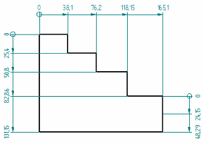
Dimensions that are parallel or perpendicular to the element that you select as the dimension axis using the Dimension Axis option
on the command bar. Use this option when the default horizontal and vertical axes are not appropriate for the geometry that you are dimensioning, or when you want the dimensions to reference different origins in the same drawing view.
Use Coordinate System

Dimensions that reference the coordinate system and axis that you select on the General tab (Drawing View Properties dialog box).
You can use this option with the Coordinate Dimension command. To learn how, see Place a coordinate dimension using a coordinate system.
- Length
-
Places a linear dimension for the following:
-
The length of a line.
-
The arc length of an arc.
-
The horizontal or vertical distance between the end points of a line.
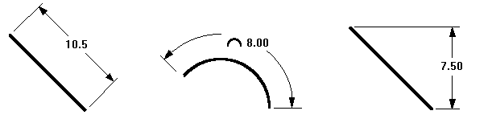
-
- Angle
-
Places an angular dimension for the angle of a line or the sweep angle of an arc.

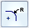
Radius-
Places a radial dimension for the following:
-
Arc
-
Circle
-
Ellipse
-
Curve

Note:-
Before you click to place the dimension, you can use the D key to change from a radial dimension to a diameter dimension, and from a diameter dimension to a radial dimension.
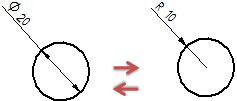
-
After placing a radial dimension inside an arc or circle, you can drag the edit handle on the extension line to lengthen or shorten it.
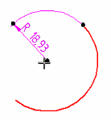
-
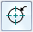
Diameter-
Places a diameter dimension for an arc or circle.
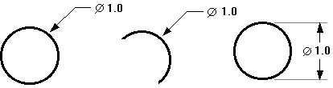
- Diameter Normal
-
Measures the diameter of elements in the normal plane. This option is available when placing PMI dimensions.
- Tangent
-
Specifies that you want to place the dimension tangent to the selected elements. When you place a tangent dimension, the tangent point on the element closest to the selected point is used.
-
If you select only one of two elements for a tangent dimension, the dimension is placed from the keypoint of the non-tangent element to the tangent of the element closest to where you click.
-
If you select both elements for tangent dimensions, the dimension is placed from the tangent point closest to where you click each element. In either case, if necessary, Solid Edge extends the element to preserve this relationship.
-
If you selected keypoints with the Tangent button selected, the keypoints take precedence and a tangent dimension is not placed.
Note:You also can use the T key on the keyboard to activate the Tangent option.
-
- Counterclockwise
-
Changes the dimension from a clockwise to a counterclockwise measurement from the origin. This option is available for angular coordinate dimensions only.
 Major/Minor
Major/Minor-
For angular dimensions, displays only the major (A) and minor (B) angles when set.
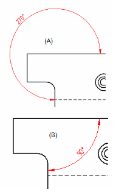
When this option is cleared, you can choose between four placement options (quadrants) for angular dimensions.

This option is disabled for chained and stacked dimensions.
- Jog
-
Places a jogged projection line on a radial or diameter dimension.
When editing a selected dimension line or dimension projection line with jogs in it, removes all jogs at once.
Note:You can add jogs to the parallel projection lines on linear dimensions, symmetrical diameter dimensions, and circular diameter dimensions, using Alt+click.
See the Dimensioning overview.
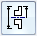
Diameter-Half/Full-
For diameter or symmetric diameter dimensions, changes the display between half and full.
Half
Full
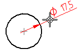
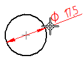
Note:For a Half diameter display, you can use the Extension option in the Projection Line section of the Lines and Coordinate tab (Dimension Style and Dimension Properties dialog box to specify the initial amount that the dimension line extends beyond the center of the circle.
- Tolerance group options
-
- Dimension Type
-
Specifies the dimension type. You can choose from the following dimension types.
Nominal
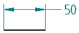
Tolerance (unit)
Enter a numeric tolerance value in specified units.
Example:-
You can type 1/8, and it converts to .125.
-
You can enter values in degrees-minutes-seconds.
-
Note:
You can type the tolerance values in the upper and lower boxes, and use the + and - buttons to specify that the values are positive or negative.
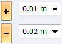
-
You can specify Tolerance (unit) layout and justification on the Units tab and the Secondary Units tab in the Dimension Properties dialog box.
Tolerance (alpha)
Enter an alphanumeric string.
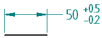
Class
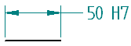
Note:You can type the tolerance values in the Upper Tolerance and Lower Tolerance boxes.
Limit
 Note:
Note:You can type the tolerance values in the upper and lower boxes, and use the + and - buttons to specify that the values are positive or negative.
Basic

Reference
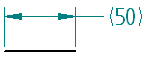
Feature Callout
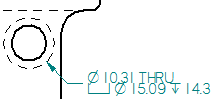
Blank
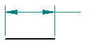
-
- Inspection
-
Adds an inspection bubble around the dimension text.
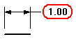
- Prefix

-
Opens the Dimension Prefix dialog box for specifying prefix, suffix, superfix, and subfix information.
You can use the Saved Settings list, which is circled in the following image, to quickly select and apply dimension prefix information to new dimensions or to modify the text in existing dimensions.
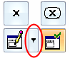
- Enable Prefix

-
When selected, displays the dimension text specified in the Dimension Prefix dialog box on the next dimension you place or on a dimension you are editing.
When cleared, hides the prefix content.
- Upper Tolerance
-
Sets the primary upper tolerance value. This option is available for tolerance, class, and limit dimension types.
- Lower Tolerance
-
Sets the primary lower tolerance value. This option is available for tolerance, class, and limit dimension types.
- Upper Tolerance Sign (+)/Lower Tolerance Sign (-)
-
By default, the Upper Tolerance box displays the positive upper tolerance value, and the Lower Tolerance box displays the negative lower tolerance value.
-
You can use the Upper Tolerance Sign (+) button and the Lower Tolerance Sign (-) button to specify whether the value in the box is a positive value or a negative value. Selecting either button changes it from + to -, and from - to +.
-
Another way to change the values from positive to negative is to type a - or + in the box and then use the Tab or Enter key to update the dimension. This does not change the state of the button on the command bar.
-
You can format the unit tolerance values using the options on the Units tab and the Secondary Units tab in the Dimension Properties dialog box.
-
- Type
-
Specifies the class type when the Class dimension type is selected. You can choose from the following options.
Fit

Fit, tolerance only

Fit with tolerance

Fit with limits

Fit Hole/Shaft only

Fit Hole/Shaft, tolerance only

Fit Hole/Shaft with tolerance

User-defined
(Any user-defined text is valid)
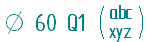
For more information, see Fit dimensions.
- Class (Fit)
-
Sets the tolerance class for user-defined fit dimensions. You can type any text in the box.
This option is available only when the Dimension Type is set to Class, and the Class Type is set to User-defined.
- Hole
-
Sets the tolerance class for a hole. This option is not available for the Class Type: User-defined.
- Shaft
-
Sets the tolerance class for a shaft. This option is not available for the Class Type: User-defined.
Note:You can change the formatting of class fit type dimensions and tolerance type dimensions using the options in the Tolerance Text section of the Text tab (Dimension Style and Dimension Properties) dialog box. For example, you can specify a slash or a horizontal separator; how to align the numbers (to the + or - sign or the decimal point); and whether to use a degree symbol.
- Other group options
-
- Set dimension plane
-
Sets the active dimension plane for the creation of PMI dimensions and annotations. The dimension plane controls how dimension values are calculated and how the dimension text is displayed.
- Lock dimension plane (F3 to unlock)
-
Lets you specify a dimension plane by clicking a planar face or reference plane. The plane remains locked until you unlock it by pressing F3.
- Keypoints
-
When placing a PMI model dimension, you can select the type of keypoint to dimension to. The default 3D keypoint filter option,
 , selects only the centers of circles and arcs or endpoints of edges. Use this option
to place a dimension that you want to use to change the model.
, selects only the centers of circles and arcs or endpoints of edges. Use this option
to place a dimension that you want to use to change the model.